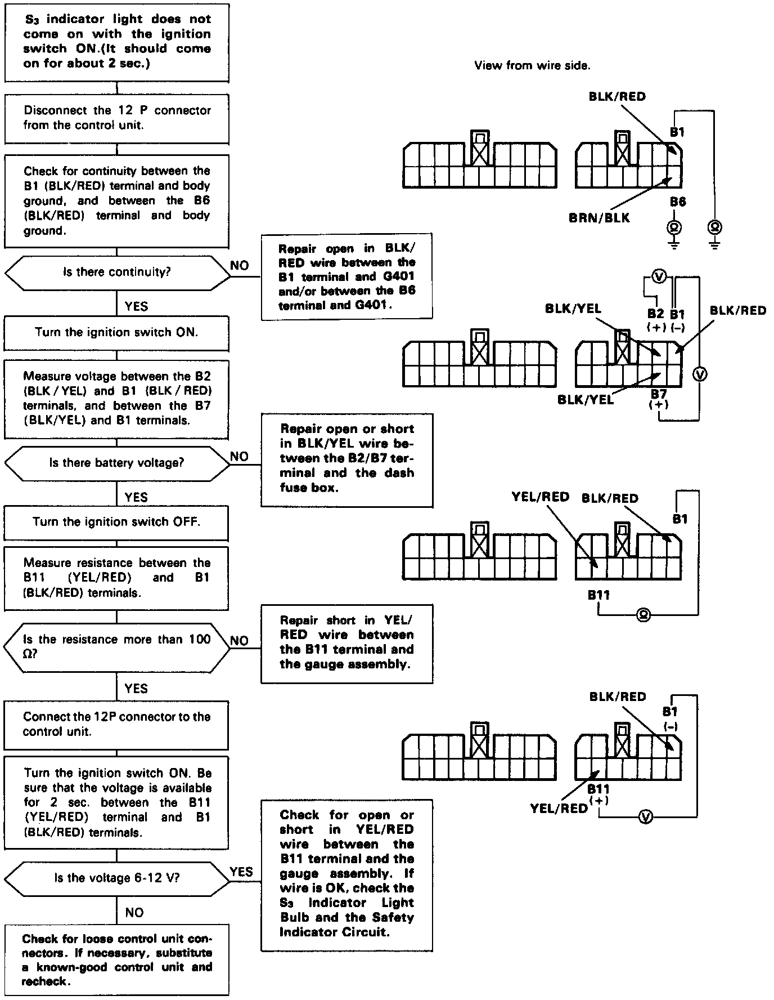

Operation CHARM
: Car repair manuals for everyone.
Home
>>
Acura
>>
1991
>>
Integra L4-1834cc 1.8L DOHC FI
>>
Repair and Diagnosis
>>
Powertrain Management
>>
Transmission Control Systems
>>
Testing and Inspection
>>
Component Tests and General Diagnostics
>>
S3 Indicator Light Circuit Troubleshooting
S3 Indicator Light Circuit Troubleshooting

Troubleshooting Flowchart
S3 indicator light does not come on when ignition switch is turned ON. (It should come on for about 2 seconds.)